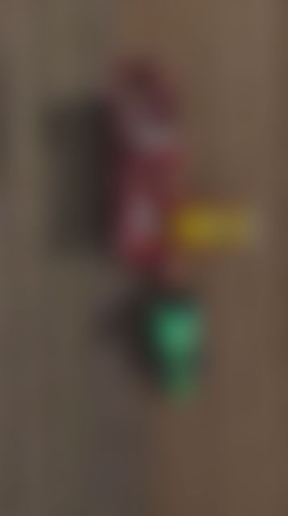
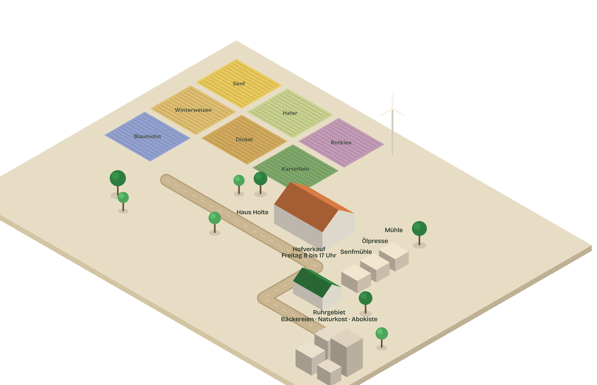

0des Brotweizens gehen als Mehl an Bäckereien im Ruhrgebiet
0Städte mit eigenen Flächen: Witten, Dortmund und Essen

Die Ernte · von oben
Kapitel · Die Ernte
Reihe für Reihe.
Der Roder nimmt die Dämme auf, siebt die Erde ab und legt die Knollen in den Bunker. Was Sie hier sehen, ist unsere Fläche in Dortmund.
Sortiert nach Sorte
Nicola, Laura, Karelia.
Jede Sorte wird getrennt geerntet und gelagert. So wissen wir bis in den Hofverkauf, von welchem Acker eine Kiste kommt.
Ohne Chemie
Und der Boden bleibt gesund.
Nach den Kartoffeln kommt Rotklee. Er bindet Stickstoff und bereitet den Boden auf das Getreide vor.

Die Reise
Vom Acker ins Regal
01 · Der Acker
Sieben Kulturen, eigene Flächen.
Senf, Hafer, Rotklee, Winterweizen, Dinkel, Kartoffeln und Blaumohn wachsen 2025/2026 in Witten, Dortmund und Essen. Ohne chemisch-synthetische Düngung, mit Rotklee in der Fruchtfolge.
Mühle, Ölpresse und Senfmühle stehen auf dem Hof: Mehl in Bäckerqualität, kalt gepresste Öle, Senf auf Granitsteinen. Alles aus hundert Prozent hofeigener Saat.
Rund 98 Prozent des Brotweizens gehen als Mehl an Bäckereien. Dazu Naturkosthandel unter der Marke Ruhrtalgold, EDEKA Zierles, Abokiste 24 und der Onlineshop.
„Die beiden Biosenf-Sorten haben ein vielschichtiges Senf-Aroma, so was Vergleichbares gibt es nicht im Supermarkt, selbst der Dijon-Senf kommt da nicht dran! Unbedingt probieren.“
BFBurkhard Füllenbachvor 8 MonatenGoogle
„Achtung: Nur freitags geöffnet! Sehr gute Auswahl, regionale Produkte und nette Menschen.“
JHJonas Holtkampvor 10 MonatenGoogle
„Wir kaufen Kartoffeln, Rapsöl, Nudeln, Mehl und Haferflocken regelmäßig von hier über den Regionalladen grüne Perle in der Wittener Innenstadt und sind sehr …“
„Die Produkte sind wirklich erstklassig und es ist alles aus einer Hand. Mehr geht nicht.“
J2Jojojay 2kvor 3 JahrenGoogle
„Außerordentliches Einkaufserlebnis. Top geführtes familiäres Unternehmen. Super regionale Bioprodukte.“
TDThies Drexlervor 4 JahrenGoogle
„Hier kann man jeden Freitag Mehl, Getreide, Kartoffeln, Mohn und Öle direkt ab Hof kaufen. Die Qualität ist hervorragend und man wird immer sehr freundlich bedient.“
KRKatharina Rudolphivor 5 JahrenGoogle
„Klasse Team! Immer freundlich und zuvorkommend … deshalb 5 Sterne!“
NBNoah Benkhofervor 5 JahrenGoogle
„Bio-Produkte der besonderen Art. Klasse Team.“
FBFabian Bvor 7 JahrenGoogle
Rezensionen aus dem Google-Unternehmensprofil der Kornkammer Haus Holte, Stand Oktober 2026. Alle Rezensionen bei Google